Mixing Down¶
In this chapter we're going to go over the steps required to mix down your Edit to a WAV file or MP3 file.
Master Processing¶
Before you mix down, you might want to add some Master effects, so that the entire stereo mix is processed. Master plugins often include a compressor and a limiter to give the final mix a professional sound.
We won't get into the details about exactly what you'd apply there, although the included Waveform Master Mix plugin is a nice choice. It's a multi-band compressor, EQ, and limiter all in one.
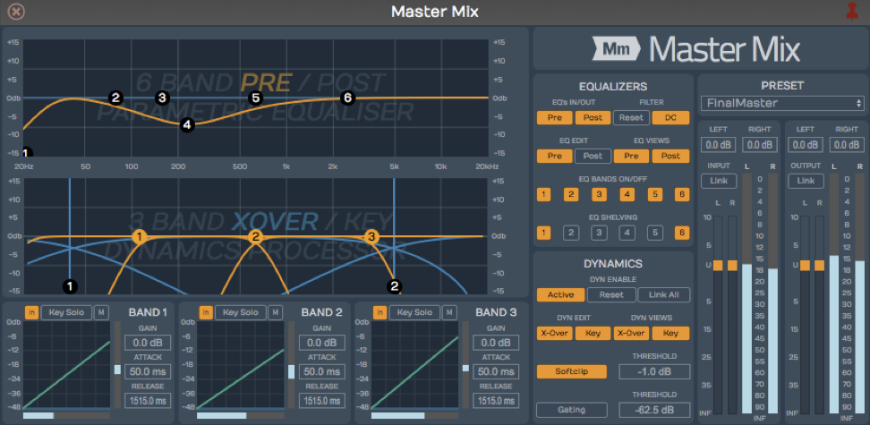
Waveform Master Mix
Make sure that the master metering is not going into the red before you export the mix. Exactly how you process the mix depends on what you plan to do with the file after it's mixed down.
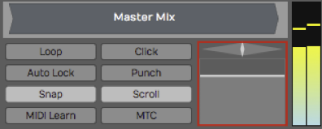
The Waveform master
If you're having professional mastering done, then you probably don't want to put any plugins on there. However, if you are immediately going to upload to your website or SoundCloud, you will want to put some mastering effects on to make your mix into a finished product.
Exporting to a WAV File¶
Here are the steps to export your song as a WAV file:
- Set the In-marker exactly at the beginning of the song. This defines the start of the export. Adjust the position of the In-marker to skip any extra bars or count-in at the beginning of the Edit.
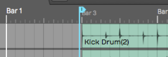
Set the In-marker Just Before the Song Start
- Set the Out-marker right after the end of the song. This allows you to control the exact length of the exported file. We recommend leaving a couple of extra milliseconds after the final fade.
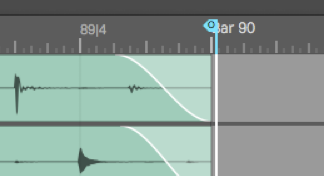
Set the Out-marker Just After the Song Ending
- Select Export > Render to a file from the Menu section. The Render dialog box appears.
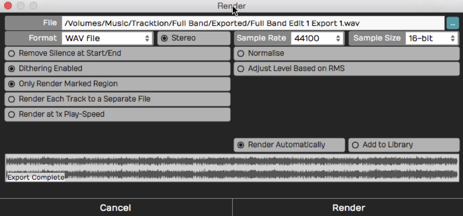
Export Render Dialog Box
The above example shows the most common settings for exporting a WAV file. You can customize the file location and name if you want. Also, make sure to select Only Render Marked Region so that the In-marker and Out-markers are used to define the export region.
- Click Render and the export will begin. Waveform starts processing in the background as you adjust the settings. Much of the time export is already done as soon as you click Render!
Locating the Exported File¶
Unless you change the file path, the file saves to the project folder. You can find the file either on the Projects tab or from the Browser.
Locating the Export on the Projects Tab - Click the Projects tab and look at the Exported Audio/MIDI list at the right. Unless you have changed the filename, your exported file will be there with the word "Export", and an export number appended.
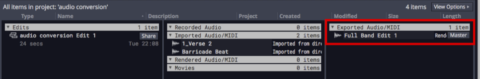
The Exported File on the Project Page Files List
To locate the file in Finder or File Explorer on your computer, select the exported file and look at properties. In the properties, click the ... button to the right of File and choose Open the folder containing this file. That opens the folder on your system, giving you direct access to the file.
Locating the Export in the Browser - Open the Browser and go to the Files tab. Click the folder icon and select Project folder.
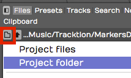
Locate the Project folder from the Browser
Double-click the folder named Exported and you will see your file. To located it in Finder or File Explorer, right-click and choose Open the folder containing this file.
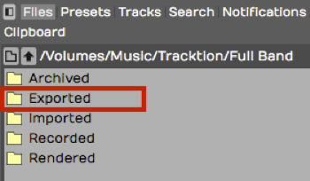
Exported Folder in the Browser
Exporting to an MP3 File¶
The steps to create an MP3 file are almost identical. Follow the same steps above except when you get to the Render dialog box select MP3 for Format. That selection gives you a few extra options for Rendering.
Add ID3/Vorbis Info - With MP3 exports you can select this option to add metadata to the file.
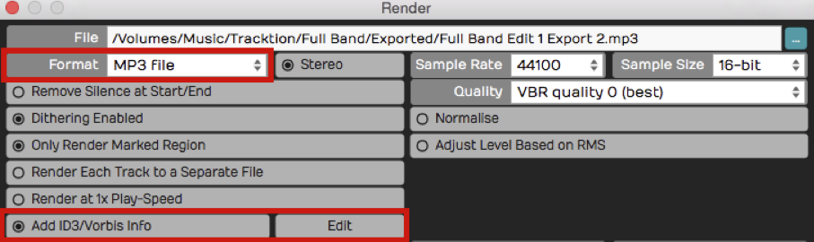
Add ID3/Vorbis Info
To enter the metadata, click Edit to the right of the option. That gives you the ID3/Vorbis Info dialog box. Fill in any information you want to include in your MP3 and click OK.
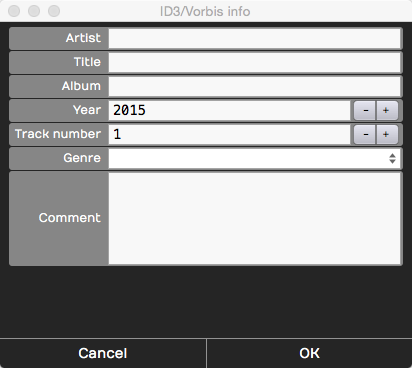
ID3/Vorbis Info Dialog Box
This information is not required. So, if you don't care to include the information, leave the Add ID3/Vorbis Info deselected.
Quality - You can choose from common MP3 quality settings. VBR stands for "Variable Bit Rate" and helps optimize the file size in exchange for a bit more complicated decoding. CBR stand for "Constant Bit-rate" and gives you slightly larger files that are encoded consistently.
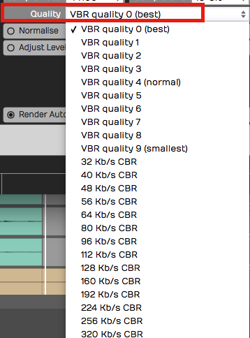
MP3 Export Quality Options
With today's fast internet speeds, including for mobile users, we recommend choosing the maximum 320 KB/s CBR. Those will give you good sounding MP3 files to upload to various sites or use in your own player.
Additional Render properties¶
The Render dialog box has numerous settings. Often you can skip looking at all of this stuff and just hit Render and you will get an output file. However, it is a helpful to know what the other properties do:
File Name and Location - The first line is the file name and the location of the output file. You can edit that to name the file with the song name. You can also update the destination folder location on you system. By default it will be export to an "Exported" folder location in the project folder.
Format - While exporting to WAV and MP3 files are the most common choices, Waveform supports several other file types:
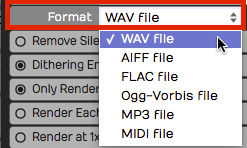
Export File Format Options
Stereo - For music it is most common to export to stereo files. If you deselect Stereo the file is exported as mono. You can use mono exports for voiceover files, fore example.
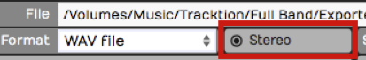
Export Stereo/Mono Selection
Channel Layout - This dropdown sets the channel format of the rendered file: Mono, Stereo, 5.1 Surround, 7.1 Surround, or From Edit. From Edit (the default) derives the layout from the Edit's own output, so most of the time you can leave it there. Choose Mono to force a single-channel file, or one of the surround presets to write a multi-channel file.
Remove Silence at Start/End - This does, as it says. If there is excess silence before the song or if there is a long silence at the end, Waveform will take that out.
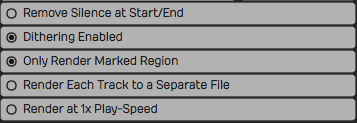
File Export Options
Dithering Enabled - If you don't know anything about dithering, then leave this enabled and move on. If you do know about dithering, then you can turn this off and add a third-party dither plugin on the master track, configuring it to dither as you please.
Only render the marked region. - Whenever Waveform indicates "marked region", it means the range between the In-marker and the Out-marker. When enabled, the exported file only includes the audio between the In-marker and the Out-marker.
Render Each Track to a Separate File - If someone else is going to mix your song in a different digital audio workstation, then you might want to export every single track in a fashion that can be imported into another system. If that's the case, turn this option on and you'll wind up with a whole collection of files: one for each track of your project. For a normal stereo export, leave this turned off.
Render at 1X Play-Speed - If you are using the Insert plugin to mix through some external hardware effect, turn this option on when exporting your mix. Normally, you leave this option turned off. When enabled the Edit will render in real time, meaning, it will mix it down in exactly the same amount of time it would take to play back once. Some feel you will get the best sound quality rendering at 1X and for that reason, some Waveform users enable 1X rendering for the final master exports.
Normalize - Normalize adjusts the overall gain of the file so that the highest peak fills up the available bit depth. Most of the time you will leave this turned off.
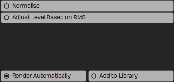
More File Export Options
Adjust Level Based on RMS - Adjusting the level based on RMS is a way to set the output to match a perceived volume level. Modern broadcast standards require your files not to exceed standards based on the country and use. When you enable this option an RMS Level field appears where you set the target average level (−30 to 0 dB, default −12 dB); Waveform scales the whole mix so its integrated RMS reaches that figure. This is the counterpart to Normalize, which instead scales so the loudest peak reaches the Peak Level field (−30 to 0 dB, default 0 dB). Only one of the two fields is shown at a time, depending on which option is active.
Add ACID Tempo/Note Info - Available for WAV exports only. When enabled, Waveform embeds ACID metadata — the tempo in BPM and the root note — into the file. Loop browsers and other DAWs read this so the loop automatically matches the tempo and pitch of the project it's dropped into. Off by default.
Pass Through Plugins - When you export to a MIDI file, this option (on by default) decides whether the notes first run through each track's plugin chain. With it on, instruments and MIDI effects such as arpeggiators or chord players transform the data before it is written; with it off the raw MIDI is exported. Note that many plugins swallow incoming MIDI, so if your exported file comes out empty, try turning this off. (When you render an individual track or clip rather than the whole Edit, the same option also governs whether audio plugins process the signal.)
Render Automatically - With this feature, in the background, as soon as you open the Render dialog box, it starts mixing down. It even shows you the progress on the lower waveform display. If you don't make any changes to the settings, as soon as you hit Render it's done instantly. Waveform already created the file in the background. It's sort of like working ahead. If you do make changes, it will start re-rendering right away. If you have a slower computer you can turn Render Automatically off.
Add to Library - Add to library means you will add what you are mixing down to your loop library, so that you can search for it and use it in another project. It's a useful feature if you are mixing a lot of things to add to your library to build it up.
Moving On¶
We have gone all the way from installing the program, to recording, editing, adding virtual instruments, to using guitar amp sims, mixing, and mixing down. There's still a lot more that you can learn and explore about Waveform and your own music. Have fun, and make a lot of music.